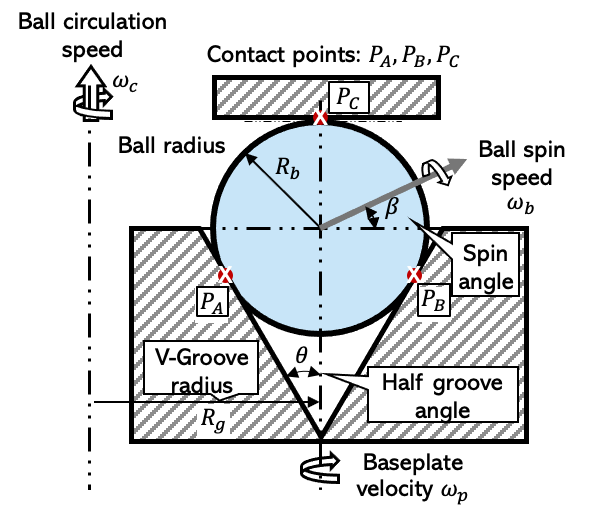
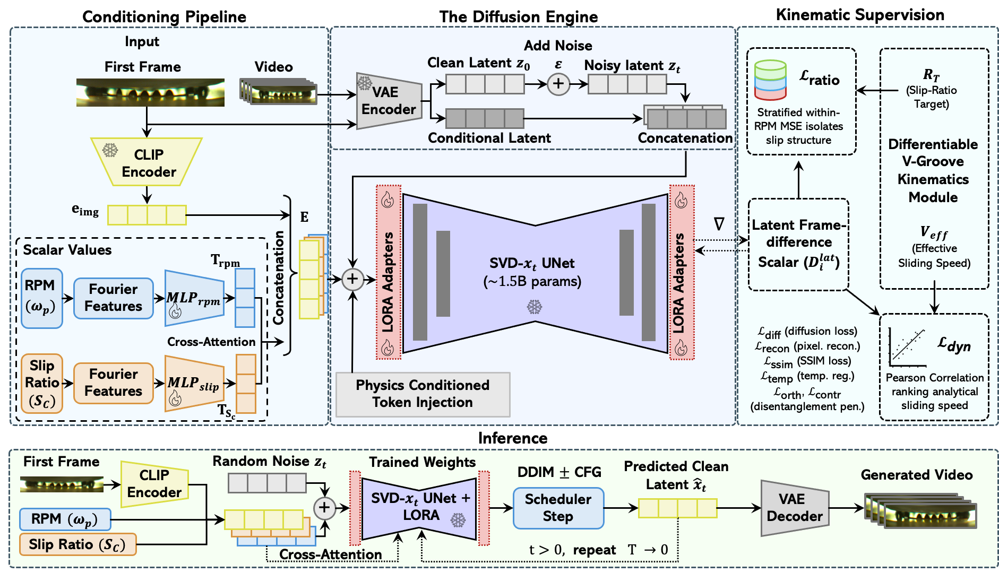
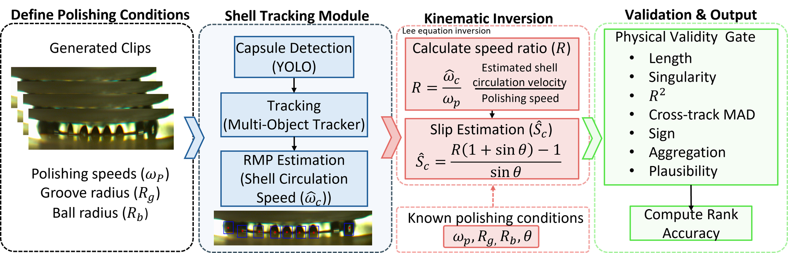
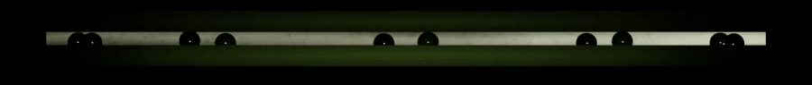

Abstract
Video diffusion models can generate realistic process videos, but using them as controllable surrogates for industrial systems remains difficult when key control variables are only partially observable and no simulator or differentiable physics model is available. We study this regime in inertial confinement fusion (ICF) target capsule polishing, where surface defects can degrade fusion yield. The dynamics are governed by the polishing speed ωp and capsule–pad slip SC. While capsule motion can be monitored from video, SC is only indirectly observable.
Using only an analytical kinematic model, we adapt a frozen Stable Video Diffusion (SVD‑xt) backbone via LoRA and condition the generation on Fourier‑encoded physics parameters. Two training objectives operate on latent frame‑difference dynamics: a batch‑level correlation loss aligning them with the analytical sliding speed, and a stratified ratio‑matching loss that isolates slip structure from the dominant speed‑driven variance. We evaluate kinematic consistency by tracking capsule motion in generated videos, inverting the kinematic model, and measuring rank agreement under a physical validity gate.
For speed, rank accuracy exceeds 0.97 on real data; for slip, it reaches 0.735 with Spearman ≥ 0.50 on synthetic data with known labels.
The setting
ICF target capsules are polished in a V‑groove lapping fixture. The capsule circulates around the groove at speed ωc, driven by the baseplate's polishing speed ωp, while a head‑contact slip ratio SC (pure rolling at 0, pure sliding at 1) governs how much of that motion comes from sliding versus rolling contact.
Routine instrumentation is a single top‑down video stream. ωc can be recovered from that video by tracking the capsule; SC cannot, since the overhead view exposes circulation, not the tangential velocity at the shell‑pad interface. No calibrated simulator exists for this real footage. We therefore ask: given a reference frame and a requested (ωp, SC), can a video diffusion model generate a plausible clip, and can we tell whether it listened to the physics?

Method
The frozen video diffusion backbone, LoRA adaptation, and Fourier conditioning tokens are standard components. Applying and evaluating them for a real industrial process with no available simulator is the contribution.

Application
A real industrial process, ICF capsule polishing, where no simulator or differentiable physics model exists for the real footage, and the only available physics is a low‑dimensional analytical map from (ωp, SC) to kinematic scalars.
Evaluation protocol
We score generated videos by tracking capsule motion, inverting the kinematic model, and measuring rank agreement in physical units (speed and slip) under a physical validity gate, instead of relying only on pixel‑level video metrics.
Empirical results
Speed rank exceeds 0.97 on real videos; slip rank reaches 0.735 on synthetic videos with known labels. Slip is learnable when exposed; the bottleneck is label availability, not model capacity.
Results
Real slip is not a measured label. It is sampled from a narrow prior, because the available overhead video exposes capsule circulation, not the shell‑pad interface. Real‑regime slip rank stays at chance (0.50), as expected. The slip result above is a positive‑control identifiability test on synthetic data with known labels, not a claim of real‑video slip control.
Generated video, real regime
Default model, held‑out clips at each of the four training speeds. Clips are 30 frames at the native capture resolution used during training (a thin top‑down crop of the groove track).
Generated video, synthetic regime (known slip = 0.50)
Same model, rendered regime with known slip labels, used to test whether slip is identifiable at all when it is actually exposed to the conditioning and evaluation pipeline.
Evaluation protocol
Perceptual metrics like FID or FVD say nothing about whether a generated video obeys the requested physics. We instead track the capsule in generated pixels, recover its circulation speed, invert the kinematic model to estimate slip, and discard clips whose recovered motion falls outside the physically plausible range for the suite before any rank is computed.


Why rank, not absolute error
A surrogate is controllable along an axis if it ranks operating conditions correctly, even if its absolute calibration is imperfect. Rank accuracy equals 1 when generated clips are perfectly ordered by the conditioning variable, 0.5 at chance, and is insensitive to monotone rescaling of the recovered estimate. Tracking, calibration, and the validity gate are fit without test labels and held fixed across every variant, seed, and sweep.
Limitations
- Real slip is unmeasured. The model is a kinematic video surrogate, not a validated real‑slip controller. The synthetic result demonstrates identifiability when labels exist, not synthetic‑to‑real transfer.
- This is not a process‑optimization tool. It predicts plausible kinematic video, not material removal, roughness, or defect formation.
- Boundary speeds (21, 108 RPM) extrapolate less reliably than interior speeds under leave‑one‑speed‑out evaluation.
- The real dataset is 604 overlapping clips from a single apparatus regime; broad transfer to other processes is not established.
- Self‑spin (ωb) is not independently validated. The tracker recovers circulation (ωc), and self‑spin appears mainly as surface texture.
BibTeX
@inproceedings{galla2026physdiffpolish,
title = {Physics-Conditioned Video Diffusion with Kinematic Priors
for Fusion Capsule Polishing},
author = {Galla, Shashank and Hanchate, Abhishek and Biener, Monika
and Bhandarkar, Suhas and Bukkapatnam, Satish},
booktitle = {Advances in Neural Information Processing Systems (NeurIPS)},
year = {2026}
}